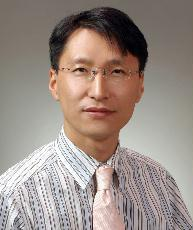

양정삼 (楊正三, Jeongsam YANG)
산업공학과 교수 · Ajou University
연구실: 팔달관 817호
전화: 031-219-1879
이메일: jyang@ajou.ac.kr
학력 · Education
- 2004.08
- 한국과학기술원(KAIST) 기계공학 박사
- 1997.02
- 한국과학기술원(KAIST) 기계공학 석사
경력 · Professional Experience
- 2015.03– 현재
- 아주대학교 교수
- 2010.03–2015.02
- 아주대학교 부교수
- 2006.03–2010.02
- 아주대학교 조교수
- 2007.01– 현재
- 국립기술표준원 산업표준심의회 구조 및 통신 전문위원회 위원
- 2011.12–2013.02
- Carnegie Mellon University (US), Visiting Scholar
- 2005.03–2006.02
- University of Wisconsin–Madison (US), Postdoctoral Associate
- 2002.02–2005.02
- ㈜부품디비 책임연구원
- 2002.04–2002.12
- Clausthal University of Technology (Germany), Visiting Researcher
- 1997.02–2000.02
- 고등기술연구원
- 1993.09–1996.12
- 한국전력 일산복합화력발전소
관심분야 · Research Interests
- Computational Geometry
- 컴퓨터 기하학
- Graphics & Geometry Modeling
- 그래픽스 및 형상 모델링
- Numerical Analysis / Manufacturing
- 수치해석 및 가공
- VR Application in Engineering Design
- 공학 설계를 위한 가상현실
- Knowledge-based Design System
- 지식 기반 설계 시스템
- Product Lifecycle Management
- 제품 라이프사이클 관리 (PLM)
Academic history transcribed from the archived CADLAB website. Historical roles and dates should be checked before being represented as current.